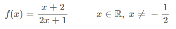
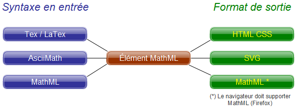

IIntroduction
L’écriture d’expressions et d’équations mathématiques dans des pages HTML, même si l’usage peut ne pas être courant, voire exceptionnel, a toujours été problématique. Mais parfois on a besoin d’afficher des formules avec un bon rendu ergonomique. Soit l’expression est brute de fonderie, peu ergonomique et difficilement lisible, notamment avec la présence de fractions, exemple :
f(x) = (x + 2) / (2x + 1) x ∈ R, x ≠ − 1/2
Soit une image est créée à partir d’outils comme Formule Math dans LibreOffice, image qui doit être recréée si la formule doit être modifiée et pour laquelle le texte ne peut pas être copié par l’internaute :
Au tout début, HTML 5 devait intégrer le standard MathML pour l’écriture d’expressions mathématiques en HTML. Mais les éditeurs de navigateurs en ont décidément autrement. Le support de MathML dans les navigateurs principaux (Chrome, FireFox, MS Internet Explorer, Safari) était disparate et il y avait trop de désaccords sur ce sujet. Google, l’éditeur de Chrome, a probablement raison d’ailleurs en décidant de ne pas porter MathML en standard dans son navigateur. Les arguments avancés sont l’usage de MathML restreint à un public de scientifiques et l’existence de librairies Javascript très puissantes qui sont en mesure de répondre au besoin.
Et effectivement, MATHJAX >> est une librairie Javascript, compatible avec tous les navigateurs, simple et très évoluée pour le rendu des expressions mathématiques en HTML. Le rendu est impressionnant, le codage simple et le contenu des expressions devient ainsi aisément modifiable en cas d’erreur ou de besoin. Voici le rendu de l’exemple ci-dessus avec MathJax (option AsciiMath)
MathJax gère plusieurs syntaxes en entrée (Tex/Latex, AsciiMath, MathML - MML), la syntaxe AsciiMath étant de loin la plus aisée pour des besoins simples. D’autres librairies Javascript existent pour formater des expressions mathématiques mais la syntaxe AsciiMath y est très souvent non supportée, la librairie katex >> par exemple ne supporte que le langage Tex/Latex. Cet article n’est pas un tutoriel pour écrire des équations de maths/physique (via MathJax).
par exemple ne supporte que le langage Tex/Latex. Cet article n’est pas un tutoriel pour écrire des équations de maths/physique (via MathJax).
- Appliquer du style sur une portion d’équation
- Mettre en évidence une équation
- Numéroter des équations
- Centrer les équations sur le signe =
Mécanique, configuration de MathJax
Pour schématiser la mécanique de MathJax :
Une ou plusieurs syntaxes en entrée sont possibles (AsciiMath, Tex/Latex, MathML) et l’expression
mathématique sera traduite graphiquement dans un format de sortie (HTML-CSS, SVG, MathML si le
navigateur supporte le langage MathML comme FireFox).
La librairie JavaScript MathJax est typiquement appelée avec la syntaxe ci-dessous :
La documentation officielle décrit les combinaisons de configurations possibles :